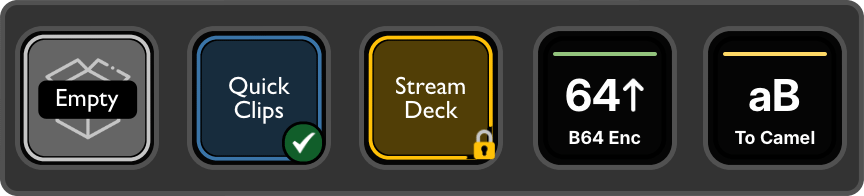
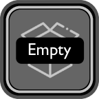
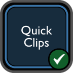
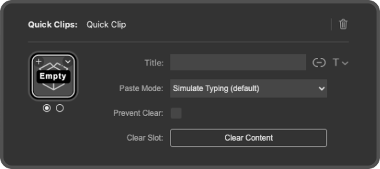
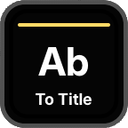
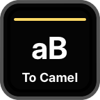
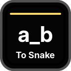
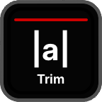
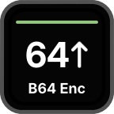
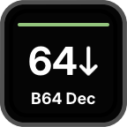

A Stream Deck plugin suite with two powerful actions - Quick Clips for capturing and pasting clipboard content on demand, and Quick Text Utils for transforming text without leaving your workflow.

Quick Clips
Turn Stream Deck buttons into flexible clipboard slots. Instead of setting up static text buttons in the Stream Deck UI, each button can grab whatever text is currently on your clipboard with a single press.
Keep a few Quick Clip buttons on your Stream Deck. When you copy something you want to reuse, press an empty button to store it. Press the same button again to paste it into the active app. When you are finished with that text, press and hold to clear the slot so it is ready for the next clip. There's no need to open the Stream Deck UI during your workflow.
Especially useful for text that changes often: code snippets, API values, email addresses, URLs, or anything you need to paste multiple times before moving on.
Button States


Settings Panel

Features
One-click capture and paste
Click an empty button to capture the clipboard, click a filled button to paste
Dynamic content
Captures whatever text is on your clipboard at the moment you press the button
Prevent Clear mode
Optional lock to protect stored clips from being cleared
Hold to clear
Press and hold for one second to clear a slot when it is not locked
Simulate typing
Outputs text by simulating keystrokes by default, leaving your clipboard untouched
Persistent storage
Stored clips survive app restarts and profile switches
Quick Text Utils
Transform clipboard text without breaking your workflow. Copy text, press a configured button, and the transformed result is ready to paste: no apps to open, no menus to navigate.
Each button is dedicated to a single transform. Press and hold for one second to reconfigure the button to a different transform at any time.
Transform Buttons






Available Transforms
Case
To Upper, To Lower, To Title, To Camel, To Snake, To Dash
Encode / Decode
Base64 Encode, Base64 Decode, URL Encode, URL Decode
Utility
Trim whitespace, Count words / characters / lines
Installation
Direct Download
- Download com.quickclips.streamdeck.streamDeckPlugin from the latest release
- Double-click the downloaded file to install
Updating from a Previous Version
- Open the Stream Deck application
- Go to Preferences → Plugins
- Find Quick Clips and click Uninstall
- Download and double-click the new version to install
Your existing buttons and stored clips will not be affected.
For development installation see the GitHub repository.
Platform Support
Technical Details
- Built with TypeScript using the Elgato Stream Deck SDK v2.0
- Uses native macOS clipboard tools (pbpaste and pbcopy)
- Text output via simulated keystrokes: clipboard is not overwritten on paste
- Settings are stored persistently within Stream Deck profiles
- No external services or network access required